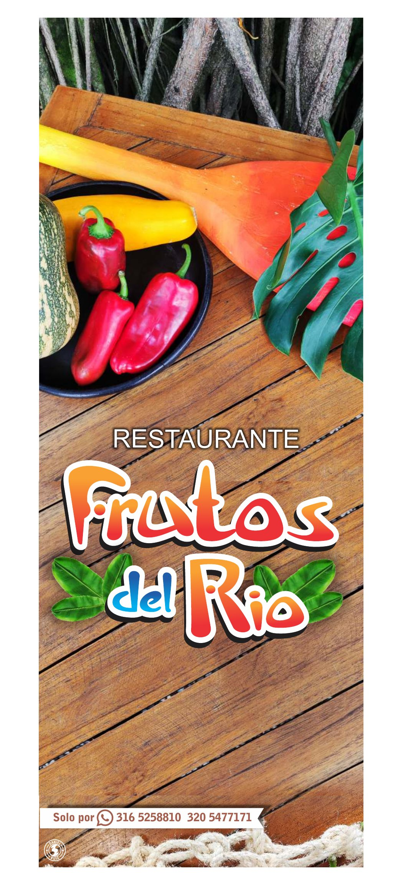
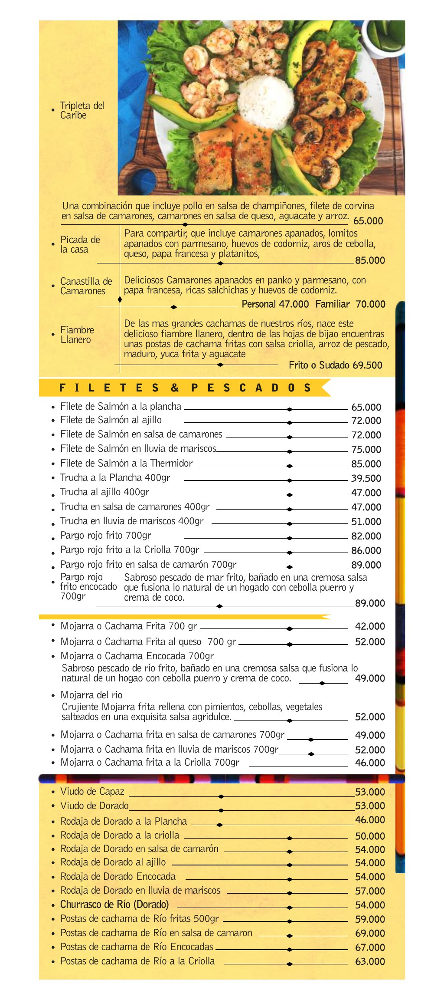
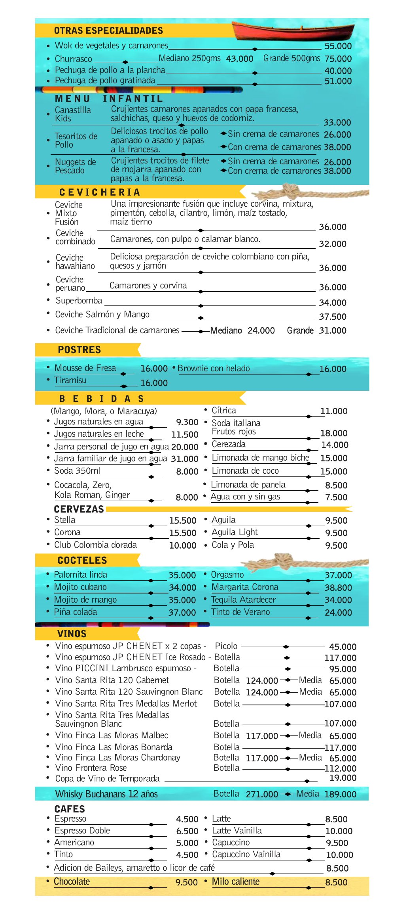

📝 Mesero
Salir
Mesas
Abrir mesa
¿Cuántas personas llegaron?
Abrir mesa
Pedido
🧾 Pedir la cuenta
Cancelar mesa
🛎 Tomar pedido
📖 Ver carta (como en el QR)



Pedidos de la mesa
Nota para la cocina (opcional)
Enviar a cocina
Pedido vacío